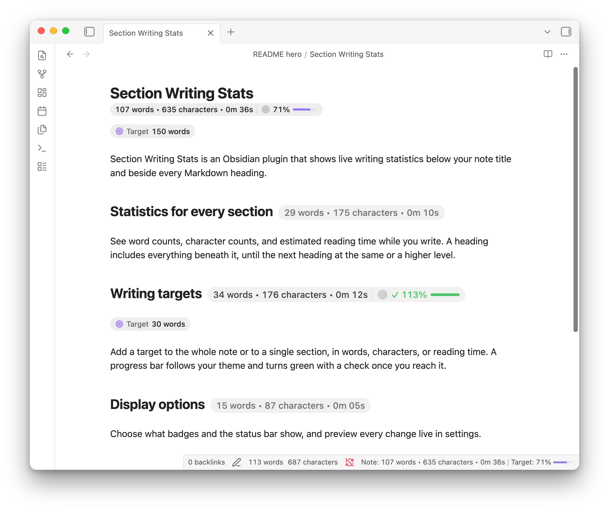

Live stats where you want them
Show live statistics beside Markdown headings, beside the note title, or in the status bar.

Section Writing Stats for Obsidian tells you.
How many wordscharacterswords
are in this section?subsection?note?section?
How long does it take to
read this section?subsection?note?section?
Join other 0+ writers that have downloaded Section Writing Stats.
Try typing to see it work.
Show live statistics beside Markdown headings, beside the note title, or in the status bar.
See the measurement you want to track without leaving the note.
Turn individual statistics on or off, use compact labels, and hide badges for short sections.
Add a Target: 750 words line below any heading. The plugin shows your progress as you write.
Target: 750 words
The first paragraph begins here. The target
line stays in the note, while the badge keeps
track of the writing.Everything stays in your Markdown. The plugin adds live context while you write.
A heading includes everything beneath it, including nested headings, until the next heading at the same or a higher level.
Yes. Add a target line below a heading to track that section, or add one to the note for a whole-note target.
Yes. Show them beside headings, beside the note title, in the status bar, or only in the places you want.
I made it for myself and thought it could be useful.
If you want to support me and the development of this plugin, you can tip me here.
Install it from Obsidian Community Plugins.